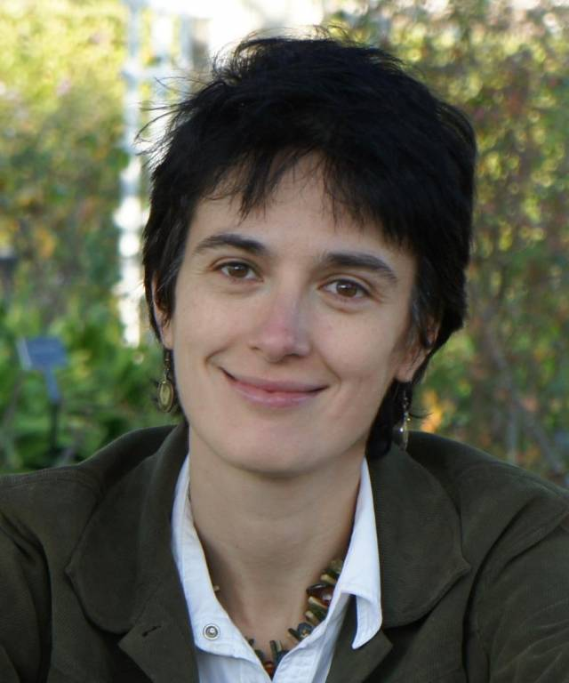

Tutorials
IEEE ICC 2021: Online Learning for Wireless Communications: Theory, Algorithms, and Applications
Presenters: C. Shen, C. Tekin and M. van der Schaar
Date:
Monday, 14 June 2021, 12:00pm - 05:00pm (EDT) (On-Demand Tutorial)
Friday, 18 June 2021, 11:30am - 12:00pm (EDT) (Live Q&A Session)
Slides and videos will be available after ICC 2021
Abstract:
The emergence of various new applications, such as Internet-of-Things (IoT), Machine-to-Machine (M2M), and cloud/edge computing, has posed significant challenges for the efficient and effective operation of wireless communication and networking systems. At the forefront of these challenges is the adaptive, automated and autonomous optimization of multiple heterogeneous system entities that can learn, match and evolve with the system dynamics, while only observing limited information about the environment. Technically, this falls into the category of sequential decision making under uncertainty, which has motivated the adoption of online learning algorithms in the design and optimization of wireless systems. In this tutorial, we will discuss the basics of online learning theory and algorithms, with a special focus on their applications to wireless communications. We will explain state of the art learning methods that results in optimal interactions between the agents. We will also explain how to efficiently design learning algorithms, quantify their performance and characterize the interactions between the agents using these algorithms. Then, we will apply these methods to several exemplary problems in wireless communication and networking scenarios, including mobility management, coverage optimization, content caching, multi-user multi-channel communication, and cross-layer learning.
Outline:
Part 1: Overview of online learning for wireless communications
Part 2: Multi-armed bandits
Part 3: Reinforcement learning
Part 4: Design examples in wireless communications
Video and slides:
The ICC tutorial video can be found in our lab's YouTube channel. Here is a copy of the presentation slides.
Presenter Bio:
Cong Shen: see the bio page
Cem Tekin is an Associate Professor in the Department of Electrical and Electronics Engineering and Head of Cognitive Systems, Bandits and Optimization Research Group (CYBORG) at Bilkent University. He received his PhD degree in Electrical Engineering: Systems from the University of Michigan, Ann Arbor, in 2013 (advisor: Mingyan Liu). He also received his MS degree in Applied Mathematics and MSE degree in Electrical Engineering: Systems, from the University of Michigan in 2011 and 2010, respectively. Prior to attending the University of Michigan, He received his BS in Electrical and Electronics Engineering (valedictorian) from METU in 2008. From February 2013 to January 2015 he was a postdoctoral scholar in Electrical Engineering Department, UCLA (advisor: Mihaela van der Schaar). He received the Fred W. Ellersick award for the best paper in MILCOM 2009, the Science Academy Association of Turkey Distinguished Young Scientist (BAGEP) Award in 2019 and Parlar Foundation Research Incentive Award in 2019. He is a Senior Member of IEEE. Cem has authored or coauthored over 60 research papers, 5 book chapters and a research monograph. He has served as a reviewer for numerous journals including IEEE Transactions on Information Theory, IEEE Transactions on Automatic Control, IEEE/ACM Transactions on Networking, IEEE Transactions on Signal Processing, IEEE Transactions on Image Processing, IEEE Transactions on Mobile Computing, IEEE Transactions on Wireless Communications, IEEE JSTSP and IEEE JSAC. He has served as a reviewer for AISTATS-21, NeurIPS-20, ICML-20 and TPC member for AAAI-21, AAAI-18, ACM Mobihoc-17, AAAI-17, AAAI-16, ISM-16, ECAI-16, MLSP-15 and GlobalSIP-15. Cem's research interests include bandit problems, reinforcement learning, data science for personalized medicine, multi-agent systems, stream mining, influence maximization and cognitive communications. |
|  | Mihaela van der Schaar is John Humphrey Plummer Professor of Machine Learning, Artificial Intelligence and Medicine at the University of Cambridge and a Turing Fellow at The Alan Turing Institute in London, where she leads the effort on data science and machine learning for personalised medicine. She is an IEEE Fellow (2009). She has received the Oon Prize on Preventative Medicine from the University of Cambridge (2018). She has also been the recipient of an NSF Career Award, 3 IBM Faculty Awards, the IBM Exploratory Stream Analytics Innovation Award, the Philips Make a Difference Award and several best paper awards, including the IEEE Darlington Award. She holds 35 granted USA patents. |